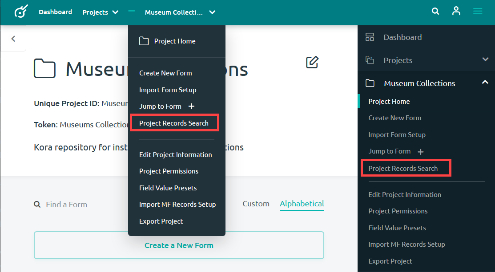

Searching and Browsing Records
The records in your digital repository are easily discoverable using Kora through several techniques. How you search for a record will depend on how narrow you want your search parameters to be. You can cast a wide net and search for a record across an entire Kora installation, or you can look in a specific project. There were also be many cases where you want to look at all of the records from a single form. This documentation will walk you through the steps of conducting each type of these searches.
Searching Across a Kora Installation
At the navigation bar at the top of the page, is a magnifying glass icon. No matter what page you are on, this navigation bar and icon should be available. clicking on it will allow you to search for any records within the Kora Installation that you have access to. Follow these steps to search for a form using this method:
-
Click on the magnifying glass icon in the top right corner within the navigation bar.
-
A search bar will appear which will allow you to enter search terms associated with the record you are searching for.
-
If you are able to enter the KID of your record, the option to Go to Record: will be made available under the search bar. Simply click on the record number to go to that record. The record number must be entered exactly to bring up this option.
-
You may not know the exact KID of your record, however. In that case, you will have to enter keywords and data into the search bar that might be associated with that record and click the right-facing arrow in the search bar to perform a proper search.
-
This search will examine records, forms, fields and projects for any results which may match your search. Kora will then display these results on the Search Kora page. Any records matching your search will be found in the Records() tab for you to browse.
-
You can conduct another search using the Search Via Keyword(s) or KID box near the upper part of the page.
-
Your new search can be filtered by selecting “Or”, “And”, or “KID”.
-
The record search will automatically start off by searching through all projects, but it's possible to search through particular project by selecting them from the Search and Select Projects(s) to Filter Results box.
Searching for a Record within a Project
You can greatly narrow down the number of records you search through if you know what project a record may be in. You can select a project or projects to search through in the Search Kora page as mentioned in step 9 above. There is a way to search for specific records in a project from the project home page, however. Follow these steps:
-
Navigate to the project home that you want to search through and open either of the menus shown below in the navigation bar.
-
Select Project Records Search from the menu.

-
This will bring you to the Project Records Search page. You may search for a particular record using the Search Via Keyword(s) or KID search bar.
-
You may also filter your keywords by selecting “Or”, “And”, or “KID”.
-
The record search will automatically start off by searching through all forms, but it's possible to search through particular forms by selecting them from the Search and Select Form(s) to Filter Results box.
Searching and Browsing Records in a Form
A form is where records are made. As such, all records for a particular form can be browsed from that form. It is also possible to navigate to a form and search for a particular record in that form.
-
Navigate to the form home page. From here you may start searching for records by either pressing the Form Record & Search() button or one of the menu options.
-
This will bring you to the Form Records and Search page where you may browse records within the form or perform a search using the Search Via Keyword(s) or KID box at the top. Select Jump to Form + and scroll through the possible forms. After locating your form, click on the name of your form to jump to that form.
-
Keywords can be filtered by selecting “Or”, “And”, or “KID”.
-
Another option for searching through form records is to perform an advanced search.
Form Records Advanced Search
Advanced searches can be conducted on form records to utilize specialized search tools that Kora offers. The advanced search option can be accessed from the Form Records and Search page as outlined in step 6 in the previous section, but it can also be accessed from the navigation bar.
The options available for an advanced search will depend upon the fields that you have made advanced searchable while creating a field. You can edit whether or not a field is advanced searchable There are some standard options, however:
-
An field that was made advanced searchable will display a space to enter a values on the advanced search page. Any records which match the values entered here in the corresponding field will match your search.
-
Alternative Field Name - searches the alternative names of fields for your keywords.
-
Negative - Can be checked in order to make records that do not fit your search be the results that show up instead.
-
empty - returns results in which the fields for your keyword are empty.